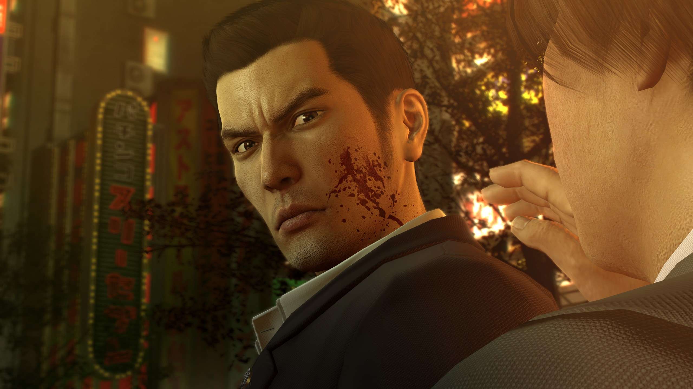
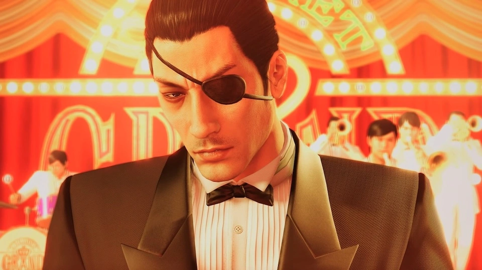

Yakuza Zero — компьютерная игра в жанре приключенческого экшена, разработанная Ryu Ga Gotoku Studio и изданная Sega. Действие игры разворачивается в конце 1988 года в Японии, в период экономического пузыря, за семнадцать лет до событий оригинальной Yakuza. Сюжет следует за двумя протагонистами — молодыми Кадзумой Кирю и Горо Мадзимой, которые, находясь в разных городах, оказываются втянутыми в жестокий конфликт между различными фракциями якудза за контроль над небольшим, но критически важным участком земли, известным как «Пустой участок». Yakuza 0 продолжает традицию, заложенную в Yakuza 4 и Yakuza 5, предлагая нескольких игровых персонажей.
Кирю Казума — Молодой якудза Кирю оказывается подставлен в убийстве на «Пустом участке» земли, за который борются боссы клана. Чтобы не подставить своего наставника, он выходит из семьи и в одиночку вступает в войну против трех лейтенантов Додзимы. Пройдя через предательства и уличные битвы, Кирю очищает свое имя, защищает близких и возвращается в клан уже в статусе легендарного «Дракона Додзимы»
Горо Маджима — Бывший якудза Мадзима живет в изгнании, управляя кабаре под надзором клана. Чтобы заслужить прощение, он получает приказ убить слепую девушку Макото, но вместо этого решает её защитить. Потеряв всё и столкнувшись с жестокостью системы, Горо осознает, что честная жизнь невозможна, и в финале принимает образ безумного «Бешеного Пса», чтобы обрести истинную свободу.


(пример ОСТа — Фоновая музыка сражения)
Катсцены из игры с официальным OST-ом
| Персонаж | Роль в сюжете |
|---|---|
| Акира Нишикияма | Лучший друг и «названый брат» Кирю. В этой части он еще преданный товарищ, который готов пойти на риск ради друга, хотя уже чувствует давление со стороны амбиций клана. |
| Макото Макимура | Слепая девушка, оказавшаяся в центре конфликта из-за «Пустого участка». Она является главной целью Маджимы, но в итоге становится человеком, которого он решает защищать любой ценой. |
| Тэцу Тачибана | Президент «Tachibana Real Estate». Загадочный и невероятно богатый человек, который знает о «Пустом участке» больше всех. Он нанимает Кирю, становясь его союзником в борьбе против семьи Доджима. Его главная цель — не деньги, а личные мотивы, связанные с семьей. |
| Джун Ода | Правая рука Тачибаны. Отличный боец и мастер переговоров (иногда очень жестких). Сначала он относится к Кирю с подозрением, но со временем они становятся напарниками. Ода — сложный персонаж со своими «скелетами в шкафу», которые сильно влияют на финал его истории. |
| Рейна | Хозяйка (мама-сан) небольшого бара Serena в Камурочо. В 1988 году её заведение становится «тихой гаванью» и штабом для Кирю и Нишики, где они могут спрятаться от разборок якудза и обсудить планы. |